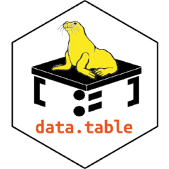
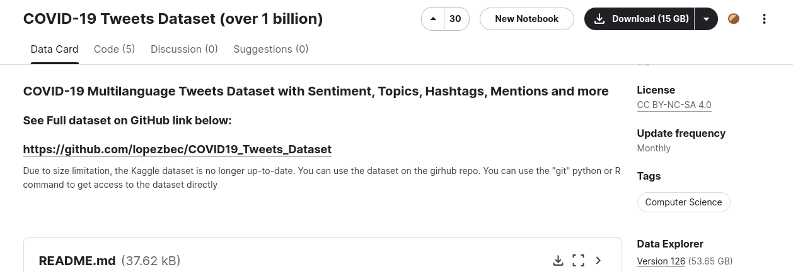
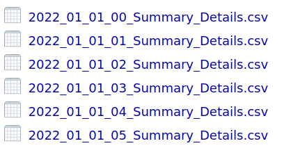
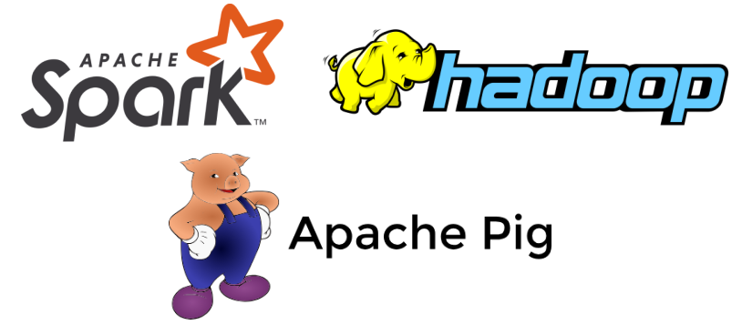

Métodos computacionales para las ciencias sociales
Herramientas para datasets grandes
Contenidos
- Estrategias simples
- arrow
- data.table
- bases de datos
Motivación
Estoy interesado en trabajar con datos del Censo de 2017
R asigna aproximadamente 6.3 GB en memoria
Durante la carga se llegan a necesitar más de 12 GB
Consecuencia: Si tengo menos de 12 GB, probablemente, tendré problemas para cargar el archivo
¿Alguna idea?
Exploremos las primeras 100 filas del archivo con el parámetro n_max
personas <- read_csv2("data/csv-personas-censo-2017/Microdato_Censo2017-Personas.csv",
n_max = 100)
names(personas) [1] "REGION" "PROVINCIA" "COMUNA" "DC"
[5] "AREA" "ZC_LOC" "ID_ZONA_LOC" "NVIV"
[9] "NHOGAR" "PERSONAN" "P07" "P08"
[13] "P09" "P10" "P10COMUNA" "P10PAIS"
[17] "P11" "P11COMUNA" "P11PAIS" "P12"
[21] "P12COMUNA" "P12PAIS" "P12A_LLEGADA" "P12A_TRAMO"
[25] "P13" "P14" "P15" "P15A"
[29] "P16" "P16A" "P16A_OTRO" "P17"
[33] "P18" "P19" "P20" "P21M"
[37] "P21A" "P10PAIS_GRUPO" "P11PAIS_GRUPO" "P12PAIS_GRUPO"
[41] "ESCOLARIDAD" "P16A_GRUPO" "REGION_15R" "PROVINCIA_15R"
[45] "COMUNA_15R" "P10COMUNA_15R" "P11COMUNA_15R" "P12COMUNA_15R"Antes de seguir
Terminología:
- Memoria: almacenamiento de acceso rápido
- Disco: capacidad de almacenamiento
- Procesador: capacidad de procesar datos
Seleccionando columnas
Estamos interesados en estudiar la escolaridad a nivel comunal
Podemos seleccionar solo las columnas que necesitamos
[1] "La nueva variable requiere 0.9166 gigas en memoria"[1] "El tiempo de lectura es de 6.11482310295105 segundos"Pueden seguir habiendo problemas para cargar, pero vamos mejorando
Experimento
Experimenten en sus computadores
Utilizando el siguiente código, prueben diferentes números de filas en n_max y vean cómo responden sus computadores.
Testeen con los siguientes valores: 1.000, 10.000, 100.000, 1.000.000, 10.000.000, 15.000.000
Ahora calculemos algunas cosas
library(dplyr)
tic()
media_escolaridad <- personas %>%
rename(sexo = P08,
edad = P09) %>%
filter(edad >= 30 & edad <= 60) %>%
group_by(COMUNA) %>%
summarise(media = round(mean(ESCOLARIDAD), 2)) %>%
left_join(etiquetas, by = c("COMUNA" = "valor")) %>%
arrange(desc(media))
toc()0.781 sec elapsed# A tibble: 346 × 3
COMUNA media glosa
<dbl> <dbl> <chr>
1 13502 21.5 Alhué
2 13123 17.9 Providencia
3 13114 17.4 Las Condes
4 13132 17.3 Vitacura
5 13120 16.9 Ñuñoa
6 1403 16.8 Colchane
7 5201 16.7 Isla de Pascua
8 13101 16.2 Santiago
9 13113 16.1 La Reina
10 5604 15.9 El Quisco
# ℹ 336 more rowsProbemos más desagregaciones
Repetimos, pero incluyendo sexo
tic()
media_escolaridad <- personas %>%
rename(sexo = P08,
edad = P09) %>%
filter(edad >= 30 & edad <= 60) %>%
group_by(COMUNA, sexo) %>%
summarise(media = round(mean(ESCOLARIDAD), 2)) %>%
left_join(etiquetas, by = c("COMUNA" = "valor"))
toc()0.772 sec elapsed# A tibble: 692 × 4
# Groups: COMUNA [346]
COMUNA sexo media glosa
<dbl> <dbl> <dbl> <chr>
1 1101 1 14.5 Iquique
2 1101 2 14.2 Iquique
3 1107 1 13.6 Alto Hospicio
4 1107 2 13.1 Alto Hospicio
5 1401 1 14.3 Pozo Almonte
6 1401 2 12.4 Pozo Almonte
7 1402 1 14.7 Camiña
8 1402 2 16.4 Camiña
9 1403 1 18.0 Colchane
10 1403 2 15.1 Colchane
# ℹ 682 more rowsComplejicemos el procesamiento
Vamos a incluir tramo etario
personas_editado <- personas %>%
rename(sexo = P08,
edad = P09,
area = AREA
) %>%
mutate(tramo_edad = case_when(
edad <= 9 ~ 1,
edad <= 19 ~ 2,
edad <= 29 ~ 3,
edad <= 39 ~ 4,
edad <= 49 ~ 5,
edad <= 59 ~ 6,
edad <= 69 ~ 7,
edad <= 79 ~ 8,
edad <= 89 ~ 9,
edad <= 99 ~ 10,
edad >= 100 ~ 11
))
tic()
resultado <- personas_editado %>%
group_by(COMUNA, sexo, tramo_edad, area) %>%
summarise(media = round(mean(ESCOLARIDAD), 2)) %>%
left_join(etiquetas, by = c("COMUNA" = "valor")) %>%
arrange(desc(media))
toc()1.075 sec elapsedAún más complejidad
Ahora calculamos la media para más de 9.000.000 de grupos
media_escolaridad <- personas %>%
rename(sexo = P08,
edad = P09) %>%
mutate(id_viv = paste0(ID_ZONA_LOC, NVIV))
tic()
personas_vivienda <- media_escolaridad %>%
group_by(id_viv, sexo) %>%
summarise(media = round(mean(ESCOLARIDAD), 2))
toc()41.075 sec elapsed¿Qué pasa si tengo que correr un proceso que ejecuta 20 tareas similares varias veces al día?
dplyr es una excelente herramienta, pero este tiempo torna inviable procesamientos largos y reiterados
Introducción a data.table
data.table es un paquete pensado para minimizar el tiempo de ejecución

Desventaja: está fuera del mundo tidyverse y su sintaxis es completamente diferente
Introducción a data.table
Instalación
Comparación en lectura
[1] "La variable requiere 0.9166 gigas en memoria"Comparación en procesamiento
Vimos que dplyr se demoraba ~37 segundos en este procesamiento
Veamos cómo sería en el caso de data.table
Sintaxis básica de data.table
i: corresponde a las filas.
j: corresponde a las columnas.
by: corresponde a las agrupaciones que queremos hacer.
Sintaxis básica

Sintaxis básica
Parametro i:
Nos permite:
Indexar filas.
Filtrar filas por valores o categorías.
Aplicar funciones específicas por filas.
Sintaxis básica: ejemplos
Parametro i:
Filtremos las primeras 6 filas
COMUNA sexo edad ID_ZONA_LOC AREA NVIV ESCOLARIDAD id_viv
<int> <int> <int> <int> <int> <int> <int> <char>
1: 15202 1 73 13225 2 1 4 132251
2: 15202 1 78 13225 2 3 0 132253
3: 15202 2 78 13225 2 3 0 132253
4: 15202 2 52 13225 2 3 2 132253
5: 15202 1 44 13225 2 3 3 132253
6: 15202 1 39 13225 2 9 8 132259Sintaxis básica: ejemplos
Parametro i:
Podemos usar cualquier condición que queramos
COMUNA sexo edad ID_ZONA_LOC AREA NVIV ESCOLARIDAD id_viv
<int> <int> <int> <int> <int> <int> <int> <char>
1: 15202 1 73 13225 2 1 4 132251
2: 15202 1 78 13225 2 3 0 132253
3: 15202 2 78 13225 2 3 0 132253
4: 15202 2 52 13225 2 3 2 132253
5: 15202 1 44 13225 2 3 3 132253
---
680: 15202 2 53 10876 2 17 1 1087617
681: 15202 2 56 10876 2 19 2 1087619
682: 15202 1 69 10876 2 23 8 1087623
683: 15202 1 66 10876 2 23 0 1087623
684: 15202 2 73 74 2 1 0 741Sintaxis básica: ejemplos
Parametro i:
El parámetro i también soporta funciones
COMUNA sexo edad ID_ZONA_LOC AREA NVIV ESCOLARIDAD id_viv
<int> <int> <int> <int> <int> <int> <int> <char>
1: 1101 1 60 7849 1 1 10 78491
2: 1101 1 38 7849 1 2 15 78492
3: 1101 2 39 7849 1 3 17 78493
4: 1101 2 12 7849 1 3 6 78493
5: 1101 1 41 7849 1 4 17 78494
---
17573999: 16305 2 41 12539 2 75 6 1253975
17574000: 16305 1 45 12539 2 75 9 1253975
17574001: 16305 1 8 12539 2 75 2 1253975
17574002: 16305 1 62 12539 2 76 14 1253976
17574003: 16305 2 60 12539 2 76 12 1253976Sintaxis básica
Sintaxis básica: ejemplos
Podemos combinar selección de filas y columnas
Sintaxis básica: ejemplos
Podemos utilizar funciones sobre las columnas
Sintaxis básica: ejemplos
Utilizando .() es posible ejecutar más de una función
Sintaxis básica: ejemplos
Para crear una columna y mutar nuestro dataframe, utilizamos el operador :=
[1] "COMUNA" "sexo" "edad" "ID_ZONA_LOC" "AREA"
[6] "NVIV" "ESCOLARIDAD" "id_viv" "escolaridad2"¿Cómo podríamos crear tramos de escolaridad?
Sintaxis básica: ejemplos
En data.table existe una función llamada fifelse
Funciona muy parecido a if_else de dplyr
Sintaxis básica

Sintaxis básica
Parámetro by:
Nos permite agrupar por variables.
Esta agrupación siempre se utiliza aplicando funciones a ciertas columnas para hacer resúmenes de los datos.
Sintaxis básica con by
by: variable de agrupación
j: la columna y función que queremos evaluar.
Media de escolaridad, según sexo
Sintaxis básica con by
Existen funciones especiales que comienzan con un punto
La función .N cuenta el número de filas para una agrupación determinada
Sintaxis básica con by
La función .SD (subset of data) devuelve una fila arbitraria de un conjunto de datos
En este caso estamos devolviendo la primera fila de la intersección sexo-área
sexo AREA COMUNA edad ID_ZONA_LOC NVIV ESCOLARIDAD id_viv escolaridad2
<int> <int> <int> <int> <int> <int> <int> <char> <num>
1: 1 2 15202 73 13225 1 4 132251 5
2: 2 2 15202 78 13225 3 0 132253 1
3: 2 1 15201 79 1767 1 6 17671 7
4: 1 1 15201 46 1767 8 17 17678 18
escolaridad_tramos hombre_dummy
<char> <num>
1: otra 1
2: otra 0
3: otra 0
4: superior 1Concatenando acciones
Imagenemos que solo nos interesan las columnas sexo y AREA
data.table nos permite concatenar acciones mediante la sintaxis DT[…][…]
Se lee así:
Ejercicio
Usaremos el dataset iris, que está cargado en R
[1] "Sepal.Length" "Sepal.Width" "Petal.Length" "Petal.Width" "Species" Sepal.Length Sepal.Width Petal.Length Petal.Width Species
<num> <num> <num> <num> <fctr>
1: 5.1 3.5 1.4 0.2 setosa
2: 4.9 3.0 1.4 0.2 setosa
3: 4.7 3.2 1.3 0.2 setosa
4: 4.6 3.1 1.5 0.2 setosa
5: 5.0 3.6 1.4 0.2 setosa
6: 5.4 3.9 1.7 0.4 setosaEjercicio
Utilizando iris realice las siguientes operaciones con data.table
Calcule el mínimo de las columnas Sepal.Length y Sepal.Width
Seleccione la primera fila de cada especie (setosa, virginica y versicolor), conservado únicamente la columna Species
Construya una nueva columna llamada ratio_length_width que sea igual a la división de Petal.Length y Petal.Width
Calcule la media de ratio_length_width para cada especie y guarde el resultado en una columna llamada media_ratio
Resumen hasta el momento
Algunos datasets pueden ser desafiantes en cuanto a su tamaño
Los datos del censo 2017 no son especialmente voluminosos, pero aún así pueden causar problemas para un PC doméstico
Lo más simple es reducir la cantidad de datos cargados
data.table es una herramienta muy poderosa y fácil de utilizar
Elegir data.table sobre dplyr puede ser la diferencia entre lograr o no la tarea de análisis que nos propongamos
Ventajas de data.table
Notablemente más rápido y eficiente que
dplyrMuy flexible
Se encuentra en un estado avanzado de maduración
Buena documentación oficial
Comunidad amplia de usuarios
Desventajas de data.table
La sintaxis no es tan intuitiva
Solo existe en R: no facilita un trabajo fluido entre lenguajes
apache arrow
Introducción a arrow
Implementación en R de la librería Apache Arrow de C++
Provee un backend de c++ para funciones de dplyr
Usamos la potencia de C++ con sintaxis dplyr
Introducción a arrow
Utiliza un formato columnar para almacenar los datos en memoria

Primeros pasos
Arrow funciona muy bien con formatos de datos columnares
Dos formatos populares son feather y parquet
Primeros pasos
Para leer un archivo parquet, usamos la función read_parquet
El parámetro as_data_frame = F es clave
Explorando el dataset
La función head() devuelve el nombre y tipos de las columnas, pero no los datos
Repitamos la operación de antes
Repetimos la agrupación a nivel de id_viv-sexo
media_escolaridad <- personas %>%
rename(sexo = P08,
edad = P09) %>%
mutate(id_viv = paste0(ID_ZONA_LOC, NVIV))
tic()
personas_vivienda <- media_escolaridad %>%
group_by(id_viv, sexo) %>%
summarise(media = round(mean(ESCOLARIDAD), 2))
toc()0.02 sec elapsedTarda prácticamente 0 segundos.
Sospechoso…
Repitamos la operación de antes
Revisemos el resultado ¿Es lo que esperábamos?
Repitamos la operación de antes
El código aún no se ejecuta
Para ejecutar el código y “traernos” los resultados, debemos usar collect
collect() ejecuta el proceso y devuelve un dataframe
Revisemos el código
Ahora sí podemos ver datos
Explicación
El paquete arrow funciona con algo llamado lazy evalue
Las cosas no se evalúan sino hasta que realmente se requieren
Las funciones collect y compute ejecutan realmente el código
Particionando
Vamos a escribir un archivo para cada comuna
Importante: La partición tiene relación con el tipo de consultas
Leyendo un dataset
Usamos la función open_dataset, indicando el directorio en el que están los datos
Volvamos a probar el código de antes
Sobrepasando la memoria
¿Qué pasa si tengo que trabajar con un dataset más grande que la memoria del computador?
Vamos a trabajar con un dataset de 53.6 GB

Descripción dataset
Para cada hora, tenemos un archivo csv

Cargando dataset
sources: directorio con los datos
format: formato de los archivos
Exploremos tabla de detalles
Primeras filas del dataset
# A tibble: 5 × 8
Tweet_ID Language Geolocation_coordinate RT Likes Retweets Country
<int64> <chr> <chr> <chr> <int> <int> <chr>
1 1e18 en NO NO 0 0 ""
2 1e18 en NO NO 1 0 ""
3 1e18 en NO NO 0 0 ""
4 1e18 fr NO YES 0 3 ""
5 1e18 fr NO YES 0 3 ""
# ℹ 1 more variable: `Date Created` <chr>Exploremos tabla de detalles
Número total de filas
Número de tuits por país
# A tibble: 233 × 2
Country frecuencia
<chr> <int>
1 "" 244518623
2 "US" 346046
3 "GB" 108594
4 "BR" 93078
5 "ZA" 14317
6 "AR" 30229
7 "MX" 29674
8 "ES" 32944
9 "CA" 61335
10 "UY" 5238
# ℹ 223 more rows8.626 sec elapsedAhora probemos con archivos parquet
¡Tardamos menos de un segundo!
# A tibble: 233 × 2
Country frecuencia
<chr> <int>
1 "" 244518623
2 "FR" 27312
3 "BR" 93078
4 "CA" 61335
5 "MY" 13874
6 "US" 346046
7 "PE" 5092
8 "IN" 70047
9 "EG" 1725
10 "PY" 2965
# ℹ 223 more rows0.999 sec elapsedUna operación más compleja
Carguemos tabla de sentimiento y details desde formato csv
details_csv %>%
left_join(sentiment_csv, by = "Tweet_ID") %>% # agregar información de la tabla de sentimientos
group_by(Country) %>%
summarise(frecuencia = mean(Probability_pos, na.rm = T)) %>%
collect() %>%
arrange(Country)# A tibble: 233 × 2
Country frecuencia
<chr> <dbl>
1 "" 0.122
2 "AD" 0.166
3 "AE" 0.190
4 "AF" NaN
5 "AG" NaN
6 "AI" NaN
7 "AL" NaN
8 "AM" 0.000000844
9 "AO" NaN
10 "AQ" 0.176
# ℹ 223 more rowsTentación con parquet
Si corren esto, es probable que sobrepasen la memoria de su computador
Algo más interesante
Calculemos el número de tuits por hora
tic()
frecuencia_fecha <- details_parquet %>%
mutate(year = stringr::str_sub(start = -4, end = -1, `Date Created`)) %>%
mutate(time = as.numeric(stringr::str_sub(start = 12, end = 13, `Date Created`))) %>%
mutate(month = str_sub(`Date Created`, start = 5, end = 7)) %>%
mutate(day = str_sub(`Date Created`, start = 9, end = 10)) %>%
mutate(month = case_when(
month == "Jan" ~ "01",
month == "Feb" ~ "02",
month == "Mar" ~ "03",
month == "Apr" ~ "04",
month == "May" ~ "05",
month == "Jun" ~ "06",
month == "Jul" ~ "07",
month == "Aug" ~ "08",
month == "Sep" ~ "09",
month == "Oct" ~ "10",
month == "Nov" ~ "11",
month == "Dec" ~ "12"
)) %>%
mutate(date = paste0( year, "-", month, "-", day)) %>%
group_by(date) %>%
summarise(frecuencia = n()) %>%
collect()
toc()21.738 sec elapsedExploremos la tabla resultante
Tenemos la frecuencia para cada hora
Editamos un poco la tabla
Convertimos a formato fecha
Gráfico de frecuencia
Usamos ggplot para el gráfico
Limitaciones de arrow
Arrow no tiene todas las funciones implementadas
Limitaciones de arrow
Error: window functions not currently supported in Arrow
Call collect() first to pull data into R.Aquí encontrarán un listado de las funciones implementadas en arrow
¿Hay algo más poderoso?
duckdb
Motor SQL optimizado para análisis de datos
Utiliza un formato columnar
No es recomendable para aplicaciones que requieran insertar, borrar o editar filas constantemente (transacciones)
Primeros pasos con duckdb
La instalación puede tomar bastante tiempo
Nos conectamos a una base de datos efímera (:memory:)
Ejemplo duckdb
Estamos haciendo la misma operación de hace un rato
Usamos SQL para hacer la consulta (query)
tic()
dbGetQuery(con,
"SELECT
d.Country,
MEAN(s.Probability_pos) AS frecuencia
FROM
parquet_scan('data/twitter/archive-parquet/Summary_Details/**/*.parquet') d
LEFT JOIN
parquet_scan('data/twitter/archive-parquet/Summary_Sentiment_ES/**/*.parquet') s
ON
d.Tweet_ID = s.Tweet_ID
GROUP BY
d.Country
ORDER BY d.Country
;") Country frecuencia
1 0.121597815610398
2 AD 0.165783264040528
3 AE 0.189881096980133
4 AF NA
5 AG NA
6 AI NA
7 AL NA
8 AM 0.000000844011195
9 AO NA
10 AQ 0.175814010816745
11 AR 0.124793020539232
12 AS NA
13 AT 0.168973293866395
14 AU 0.169046130392544
15 AW 0.190112296282627
16 AZ NA
17 BA NA
18 BB 0.248946130082965
19 BD 0.249542773845179
20 BE 0.177134819700438
21 BF NA
22 BG 0.041929243348659
23 BH 0.109210651289200
24 BI NA
25 BJ 0.492586227613489
26 BL NA
27 BM NA
28 BN 0.497892259205575
29 BO 0.134917910960514
30 BQ 0.255765331182464
31 BR 0.326580412104430
32 BS 0.116459298470962
33 BT NA
34 BW 0.292532361948081
35 BY NA
36 BZ NA
37 CA 0.146103034776458
38 CC NA
39 CD 0.454974677158180
40 CF NA
41 CG 0.182146547923854
42 CH 0.108289841074764
43 CI 0.210084730963067
44 CK NA
45 CL 0.120312905603788
46 CM 0.392821664675869
47 CN 0.105354951449691
48 CO 0.120845594278489
49 CR 0.105753377581348
50 CU 0.185385343919912
51 CV NA
52 CW 0.000000000058153
53 CY 0.335102996205717
54 CZ 0.240161345304226
55 DE 0.154813249789114
56 DJ NA
57 DK 0.072759803117587
58 DM 0.051365715397046
59 DO 0.126666580603485
60 DZ 0.157831446491264
61 EC 0.120741276203072
62 EE 0.089840464176343
63 EG 0.247141950160636
64 ER NA
65 ES 0.125766350019808
66 ET 0.410723763551781
67 FI 0.073305757641209
68 FJ 0.497892259205575
69 FK NA
70 FO NA
71 FR 0.175154512047886
72 GA 0.497892259205575
73 GB 0.181773694937854
74 GD NA
75 GE 0.030377491952999
76 GF 0.077002917350632
77 GG NA
78 GH 0.332180733363349
79 GI 0.317997788629000
80 GL NA
81 GM NA
82 GN 0.051112372491556
83 GP 0.497892259205575
84 GQ 0.056547149793291
85 GR 0.084046715165551
86 GT 0.120947853456882
87 GU NA
88 GW 0.345334477521430
89 GY NA
90 HK 0.124544856268460
91 HN 0.129895369942232
92 HR 0.304871807773215
93 HT 0.000056905937197
94 HU 0.192165133126378
95 ID 0.414299056561080
96 IE 0.110314332094787
97 IL 0.149855880105761
98 IM NA
99 IN 0.452098850577955
100 IO NA
101 IQ NA
102 IR 0.086416004854744
103 IS 0.342846345434957
104 IT 0.170501400703483
105 JE NA
106 JM 0.119944787196746
107 JO NA
108 JP 0.111023596263983
109 KE 0.401598675859143
110 KG NA
111 KH NA
112 KI NA
113 KM NA
114 KN NA
115 KP NA
116 KR 0.099177355190016
117 KW 0.448104286478518
118 KY 0.000038969996163
119 KZ 0.014989462830596
120 LA NA
121 LB 0.058997324812816
122 LC 0.487280196021403
123 LI 0.213298885268088
124 LK 0.497892259205575
125 LR NA
126 LS 0.345533284078569
127 LT 0.248970087779172
128 LU NA
129 LV 0.273435701478852
130 LY NA
131 MA 0.040990798287330
132 MC NA
133 MD 0.657825493202254
134 ME 0.000003664914128
135 MF NA
136 MG 0.173208951015844
137 MH NA
138 MK NA
139 ML 0.000616484708655
140 MM NA
141 MN NA
142 MO 0.000014701077713
143 MP NA
144 MQ 0.360820579080287
145 MR NA
146 MS NA
147 MT 0.132433780590877
148 MU NA
149 MV 0.497892259205575
150 MW 0.497892259205575
151 MX 0.131732951984859
152 MY 0.481007544054525
153 MZ 0.084202144157194
154 NC NA
155 NE 0.497892259205575
156 NF NA
157 NG 0.473342400190572
158 NI 0.265998269124630
159 NL 0.156170288524055
160 NO 0.113568569892839
161 NP 0.337902876406686
162 NR NA
163 NU NA
164 NZ 0.078193696193010
165 OM 0.322354357406619
166 PA 0.112455563422732
167 PE 0.125680196710619
168 PF NA
169 PG NA
170 PH 0.414097981470971
171 PK 0.392783368116102
172 PL 0.117816303915896
173 PM NA
174 PR 0.107858276385523
175 PT 0.185299346853967
176 PW NA
177 PY 0.126629972527394
178 QA 0.092375888051706
179 RE 0.473755446552898
180 RO 0.155936060572888
181 RS 0.375315097779593
182 RU 0.122935208279728
183 RW 0.168760781868997
184 SA 0.217280427705873
185 SB NA
186 SC 0.497892259205575
187 SD NA
188 SE 0.160380622740258
189 SG 0.246979525696651
190 SI 0.036148482194268
191 SK 0.017855239562030
192 SL NA
193 SM NA
194 SN 0.181368797810234
195 SO NA
196 SR NA
197 ST NA
198 SV 0.131203959394034
199 SX 0.497892259205575
200 SY 0.249010372857086
201 SZ NA
202 TC NA
203 TD NA
204 TG NA
205 TH 0.130102985000433
206 TJ NA
207 TL 0.224576621188328
208 TM NA
209 TN 0.096909678244038
210 TO NA
211 TR 0.271165941624752
212 TT 0.150265292993123
213 TW 0.020616353213198
214 TZ 0.550000362793207
215 UA 0.310296826714056
216 UG 0.497892259205575
217 US 0.180845713484856
218 UY 0.120369844426840
219 UZ NA
220 VA NA
221 VC NA
222 VE 0.156628746706025
223 VG NA
224 VI NA
225 VN 0.119214932771531
226 VU NA
227 WS NA
228 XK 0.497892259205575
229 YE 0.054019592366103
230 YT NA
231 ZA 0.393983444158674
232 ZM 0.229736913403518
233 ZW 0.4978922592055753.435 sec elapsed¿Qué pasa si no quiero usar SQL?
dbplyr
dbplyr es un paquete que nos permite interactuar con una base de datos usando las funciones de dplyr

Ejemplo dbplyr
Vamos a conectarnos a una base de datos compacta
Contiene versiones pequeñas de los datos que hemos estado usando
Al igual que con arrow, debemos usar collect para traernos los datos
Podemos hacer left_join
Para cerrar la conexión con la base de datos, usamos dbDisconnect
Ejercicio final
Abre el archivo del censo en formato parquet
Escribe un dataset, usando la comuna como variable de agrupación
Lee el dataset que creaste
Crea una columna que sea 1 cuando una persona es profesional (p15 = 12) y cero cuando no
Calcula el número de personas profesionales por comuna
Bonus: Calcula el porcentaje de profesionales a nivel comunal
Tabla comparativa
| dplyr | data.table | arrow | duckdb | |
|---|---|---|---|---|
| tamaño del dataset | pequeño | medio | grande | grande |
| flexibilidad | muy flexible | muy flexible | poco flexible | flexible |
| sintaxis | muy sencilla | sencilla | muy sencilla | compleja |
| comunicación con otros lenguajes | solo R | solo R | formato compatible con python y otros lenguajes | muy compatible con otros lenguajes |
Comentarios finales
dplyres una excelente herramienta cuando nuestro dataset es pequeño- En cierto punto,
dplyrdeja de ser útil Rofrece varias herramientas para procesar grandes volúmenes de información- data.table
- arrow
data.tablees la herramienta ideal cuando tenemos algunos millones de filas
Comentarios finales
arrowes una muy buena alternativa para quienes quieren mantenerse en eltidyverse- Logramos procesar más de 240 millones de registros en una máquina modesta
- 16 GB RAM
- 16 hilos
duckdbes una base de datos altamente optimizada para análisis de datos- Vale la pena cuando ya tenemos varios GB de datos
¿Hay algo después de duckdb?
Big data
High performance computing (HPC)
Computación distribuida
